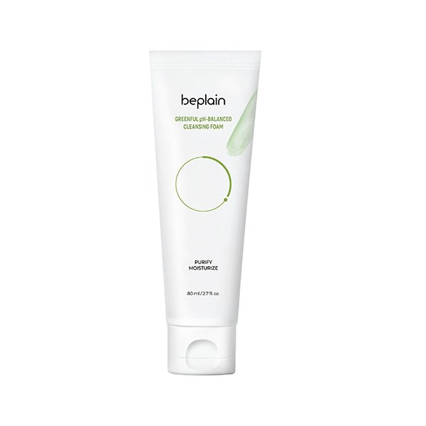

Sữa rửa mặt chiết xuất đậu xanh dịu nhẹ với 32.32% chiết xuất đậu xanh cùng bột lá trà xanh, nhẹ nhàng rửa sạch lớp makeup và bụi bẩn mà không phá vỡ hàng rào bảo vệ tự nhiên của da.
Sản phẩm phù hợp với mọi loại da.
Thành phần chính:– 32.32% chiết xuất đậu xanh giúp nuôi dưỡng và cung cấp dưỡng chất cho da.
– Bột trà xanh tạo kết cấu bọt xốp dịu nhẹ.
– Hơn 30% Amino Acid Polyol cùng các dẫn xuất đem lại hiệu quả cấp ẩm, làm dịu và ngăn ngừa kích ứng.
– Chiết xuất đậu xanh, một thành phần truyền thống tại Hàn Quốc, giúp làm sạch, thải độc và phục hồi làn da mệt mỏi.
– Tạo cảm giác ẩm mượt, không gây khô căng với độ pH cân bằng ở ngưỡng 5.5
– Loại bỏ bã nhờn và tạp chất với hỗn hợp chiết xuất đậu xanh cùng bột trà xanh.
Lấy một lưỡng sữa rửa mặt vừa đủ lên tay ướt
Nhẹ nhàng massage toàn bộ khuôn mặt
Rửa kỹ với nước ấm
1. Không sử dụng trên vùng da hở hoặc tổn thương.
2. Ngừng sử dụng và hỏi ý kiến bác sĩ/chuyên gia nếu có bất kỳ triệu chứng bất thường hoặc tác dụng phụ như mẩn đỏ, phát ban và ngứa.
3. Khi sử dụng sản phẩm này, tránh tiếp xúc với mắt. Khi sản phẩm dính vào mắt, rửa thật kĩ với nước.
ROVECTIN
Mọi loại da
Chưa có đánh giá
Email của bạn sẽ không được hiển thị công khai. Các trường bắt buộc được đánh dấu *
Đánh giá của *
ĐÁNH GIÁ CỦA BẠN *
TÊN*
EMAIL*